8 brands · 7,050 ads pulled 10/20 · ranked by copies × pages × days (Meta publishes no US impressions) · top 6 videos + 6 statics per brand, read by eye. Frame sheets = 9 frames across the video, left→right, top→bottom.
What to build for DirectMax, in order
Rules baked in: no ingredient names, no "arousal", no hard/firm, no white coat (black/maroon scrubs), no all-animation, brand-agnostic where marked, Cashvertising 3-5 per script, script pipeline for anything over 30 seconds.
"The part nobody explains" long copy, 6 cheap videos. Primary text = the song's mechanism as a 1,200-word first-person story (hotel lot → "long week" → tried three → keep vs start). Videos: (a) car-selfie actor, (b) AI nurse black scrubs over b-roll, (c) cartoon brain + spine signal as b-roll inside the presenter, (d) Pixar still thumbnail on live video, (e) text-scroll over the nightstand book, (f) 10-s product counter. One copy, six ads. Noverly model. **Build first.**
Mundane-photo letter static (Auniva). Image: two coffee mugs on a hallway floor / a hotel parking lot at night / the book on the nightstand. No product. Primary text = the letter from #1. This is the split-image long-copy crack. Three photos × one letter = three ads.
Text-scroll video (Auniva). Same letter, scrolling over one still, 2:30, no voice, no music. Cheapest video we will ever make.
Three symptoms, one signal (Aurivita/UltimaPeak). "Can't start. Can't keep. Can't stop thinking about it. Three problems? One signal that isn't getting through." Static + 30-s video.
Don't-order-this-yet opener (Aurivita). "Don't order this tablet yet. Read this first. If you're still: timing the blue pill an hour out ✗ hoping tonight's the night ✗ telling her 'long week' ✗ …"
Pharmacist confession (Primal Storm). Counter, black scrubs. "I've filled the blue pill for twenty years. In June my own script came across my counter. I didn't fill it." → keep vs start.
Wife POV UGC (UltimaPeak #2, 48 copies in 5 days). "My sister told me her husband was back in two weeks. I ordered it that night." Real woman, kitchen, one-word captions. Meta-safe wording: "back", "showed up", "didn't quit halfway".
Nurse comment-reply (Aurivita/Noverly). Bubble: "My doctor said it's all in my head. Is he right?" Nurse: "Half right." Maroon scrubs, b-roll of the signal.
Older-woman label comparison (Rosabella "this is why it's not working"). Woman pharmacist holds the blue pill box and the plain envelope: "This one only helps you keep it. That's why it's not working."
Walmart aisle rating (Noverly nurse). Walk the men's-health aisle, 0/10 → 10/10 → "1000/10: the one that isn't on a shelf." Risk: naming shelf products; use generic bottles.
Statics pack: "8 signs it's in your head (men over 40)" icon grid; "It takes 2 minutes" (the visit); iMessage from her "babe… what changed?"; "She asked for round two" comic; before/after sketch (Friday 9pm → Sunday 9am); shock image = the three old pills in the trash.
Pixar narrated story (David's pick; UltimaPeak `top/02.mp4` and Primal Storm `top/03.mp4` are the reference cuts). Build with the song story. Flag: all-animation was rejected on DirectMax 10/5; test one with a live cold open + Pixar body.
Parked (their format, not ours): podcast/studio clips (Meta rejects on our accounts), owner-in-warehouse (no owner), "extra 2 inches" claims, health-outcome claims (heart attack), ingredient grids.
What the winners have in common
One long primary text, many cheap visuals. Noverly's #1 ad (672 copies, 5 pages) is a 2,000-word "Your testosterone came back normal. That's the part nobody explains to you" story. The SAME text runs with a cartoon-organ explainer, a LEGO explainer, a Pixar skeleton, a nurse in the Walmart aisle, a car selfie and an AI b-roll montage. The copy is the asset; the video is a thumbnail. Every brand does a version of this.
"Here's what nobody tells you" grammar. Noverly, Aurivita (×6), Primal Storm, UltimaPeak all open with it. Our chorus already has it ("the part nobody fixed").
Three symptoms, one root cause. Aurivita: weak stream + weaker erections + up 4×/night = one cause. UltimaPeak: soft + fast + no drive = "supply problem, and supply is restorable."
Anti-pitch opener. "Don't buy Aurivita. Read this first." "Please don't buy it at Walmart. I did." "F*ck this product" (review-turned-testimonial). "Okay don't buy this yet. Just listen."
Insider confession. Pharmacist who refused to fill his own Viagra script (28 yrs); urologist "sick of men saying L-arginine fixes ED"; county coroner "opened 4,000 chests"; concierge doc to 110 adult-film performers; paramedic "70% of men who had a heart attack had ED first" (health claim, not for us).
Woman POV. "My sister told me her husband was hard again in two weeks. I ordered it that same day." "I stopped reaching for my diabetic husband two years ago." "He went three rounds and I had to tell him to stop." Aurivita's Lucy Thorne page: "If your man goes from hard to soft the second you switch positions…"
Mundane photo + long letter. Auniva (34 copies, 11 days, 8 pages): a photo of a workbench / a Singer sewing machine / a bass boat / a plate of steak, and a 1,500-word first-person letter in the primary text. No product in the image. Rosabella does the same with parables ("Call him Walt") over garden rows, a police car through a window, soup bowls. Leg Cramp Reset's split image is the same family.
Text-scroll video. Auniva's whole letter scrolling over a still of eggs and bacon. ~3 minutes. No voice. The cheapest video in the set, and it's in their top 3.
Presenter containers. Nurse in scrubs answering a comment bubble (Aurivita, Noverly). Woman holding the pouch, one-word yellow captions (UltimaPeak). Owner in the warehouse with factory b-roll (Primal Storm). Older woman comparing two labels, "this is why it's not working" (Rosabella). Amish farmer in a barn (Rosabella). Nurse walking the Walmart aisle rating bottles 0/10 → 1000/10 (Noverly).
Animation, four flavors: cartoon organ characters (heart in ICU bed), Pixar couple story ("his wife noticed before he did"), LEGO explainer, product-jar superhero. **Supplements get away with 100% animation. We got rejected on DirectMax 10/5 for it.** Our version = animation as b-roll inside a live presenter, or a Pixar still as the thumbnail on a live video.
Caption styles: one WORD at a time centered (most common), one short line in a white box, yellow-highlighted keyword in a sentence.
Offers: buy 2 get 1/2 free + "6 hours left", "70% off, 3 for $33", 60-day money back, free second bottle, "we pack two paid and two free" shown in the warehouse. Rx can't bundle; our equivalents are per-dose price, 2-day plain box, money-back.
Statics that repeat: "Don't take these unless you want…" + 5 checkmarks; "8 signs you're losing it in bed, men over 45" icon grid; "It takes 3 seconds to read this"; iMessage from the wife ("Babe… it's only been 9 days"); before/after sketch; shock medical photo (artery slices mild→severe, kidney X-ray); "WE'RE SO SORRY" apology letter; comic-book "She asked for a rematch"; ruler + tiny crumb innuendo; Ozempic squirrel cartoon.
Noverly noverly.shop · ~3,000 live ads
"Your testosterone came back normal. That's the part nobody explains." One 2,000-word story, run with a dozen different videos.
Top 5 ads by copies
672 copies · 5 pg · 60 d · video Your testosterone came back normal. That's the part nobody explains to you. You went in because something that used to be automatic had stopped being automatic, they drew blood, and the number came back inside the range — and the…
109 copies · 4 pg · 90 d · video If your fasting glucose keeps climbing every blood draw — even though you've cleaned up your diet, you walk after dinner, you've already tried berberine — it's not because you need more willpower. It's because you've been fixing t…
66 copies · 2 pg · 29 d · video I'm 54, diabetic nine years, and last March I moved myself up to 100 milligrams of Viagra without telling my doctor. 100 is the ceiling. There is no 150. I found that out the same night I found out 100 doesn't always work either.…
62 copies · 1 pg · 80 d · video If your feet still burn at night — even though your blood sugar is better than it's been in years, even though you take the nerve pill every single night, even though you've already tried the B-vitamin bottles and the creams and t…
40 copies · 1 pg · 57 d · video My A1c was 13.1. Ninety-one days later it was 5.9. My doctor said the word "outstanding" twice and wrote it in my chart. Six weeks after that I was sitting on my bathroom floor at four in the morning with both feet on fire, and …
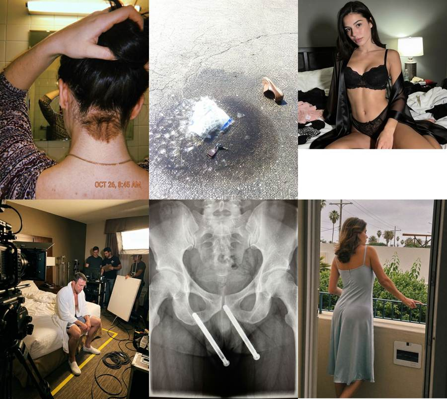
Statics. Story-letter photos: woman with neck hair + timestamp, smashed phone in a parking lot, lingerie, film crew in a hotel room, pelvis X-ray with implant rods, woman on a balcony. No product. The letter is in the primary text.
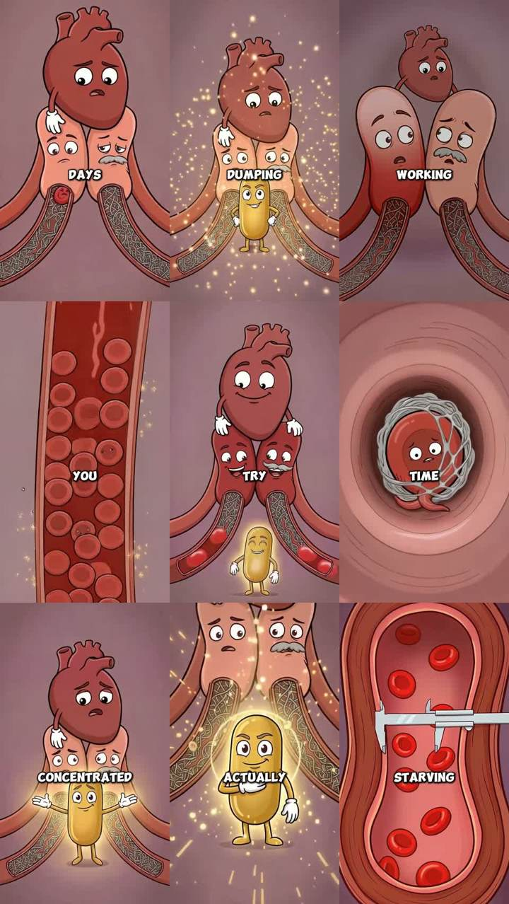
Video 1. Cartoon organ characters explainer, one word at a time
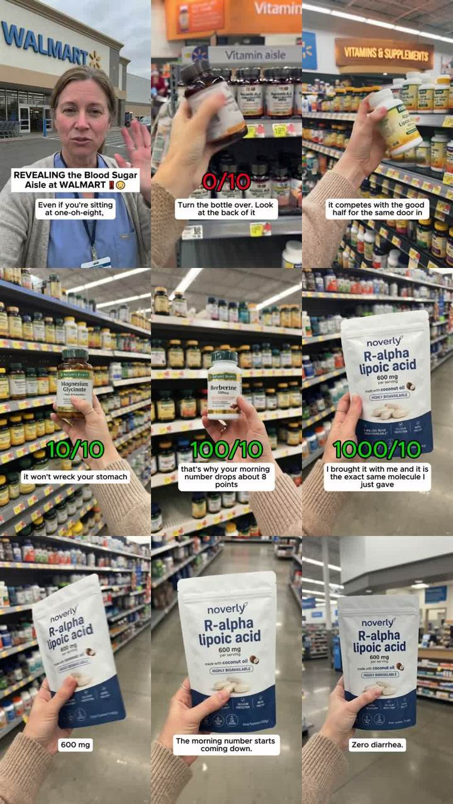
Video 2. Nurse walks the Walmart vitamin aisle rating bottles 0/10 → 1000/10, ends on her pouch
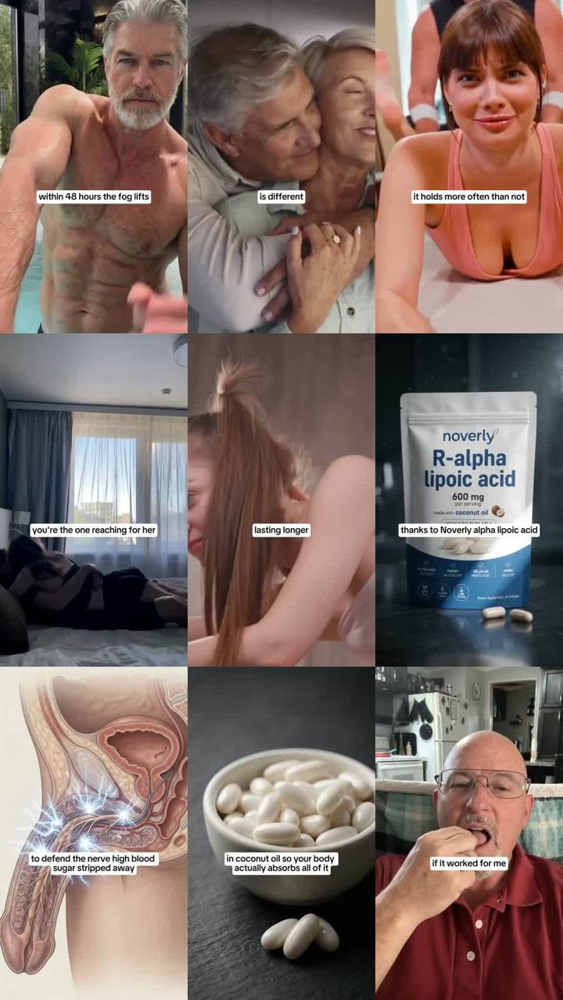
Video 3. AI b-roll montage (silver fox, couple, woman, anatomy, old man takes pill) with one-line captions
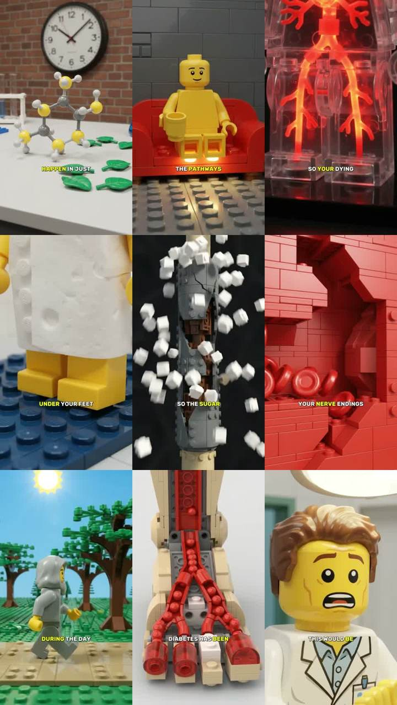
Video 4. LEGO stop-motion explainer, yellow-highlight captions
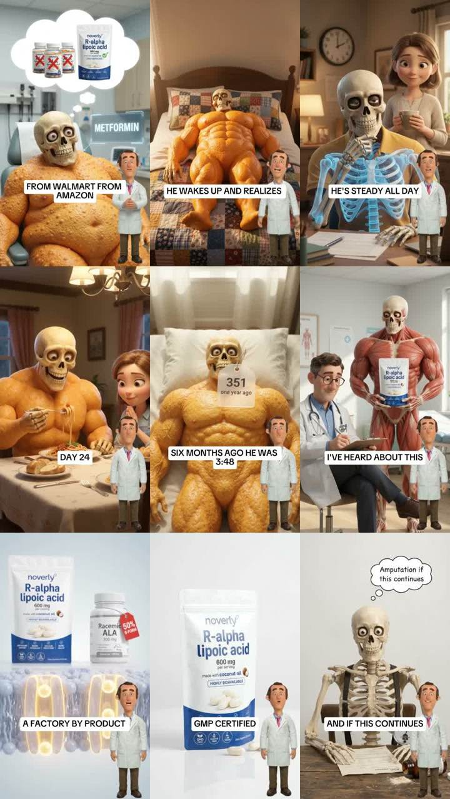
Video 5. Pixar skeleton "DAY 24 / six months ago he was 3:48" with a tiny doctor presenter in the corner
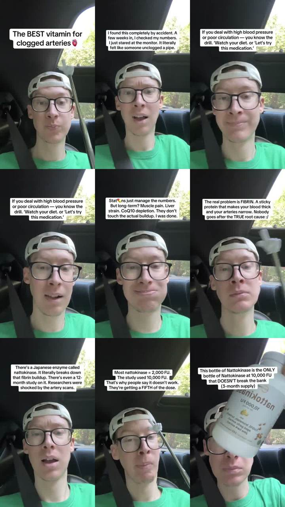
Video 6. Car-selfie guy, text boxes: "The BEST vitamin for clogged arteries"
Aurivita aurivita.co · ~730 live across 3 pages
Prostate + ED + blood pressure = one circulation problem. "Don't buy Aurivita, read this first." Penile-implant scare.
Top 5 ads by copies
80 copies · 1 pg · 40 d · video Aurivita Capsaicin Power is 50% off today. The natural circulation support over 47,000 men have already chosen. ✅ Pharmaceutical-grade capsaicin ✅ 3mg therapeutic dose per serving ✅ BioPerine for 2000% absorption ✅ Plus Beetr…
56 copies · 2 pg · 9 d · video 🚨 STOP scrolling — this is the deal of the year. Aurivita Capsaicin Power — the cardiovascular formula thousands of men are crediting for cleaner circulation, stronger energy, and feeling like themselves again — just dropped 70% …
30 copies · 5 pg · 42 d · image Experience the Power of Aurivita Cayenne Pepper Softgels! ❤️ ✅ Supports cardiovascular health naturally ✅ Easy-to-swallow odorless softgels — no spicy aftertaste ✅ Supports healthy circulation and vascular function ✅ 60-day suppl…
36 copies · 1 pg · 5 d · video Experience the Power of Aurivita Capsaicin Power! ✅ Supports healthy blood sugar response ✅ Helps fight diabetic numbness and cold extremities ✅ Activates natural nitric oxide production ✅ Pharmaceutical-grade capsaicin ✅ 3mg…
23 copies · 3 pg · 23 d · image Capsaicin is nature's most powerful circulatory activator — the only natural compound that activates TRPV1 receptors on your blood vessels and restarts nitric oxide production from the inside. 🫀 Aurivita packs 11 cardiovascular i…
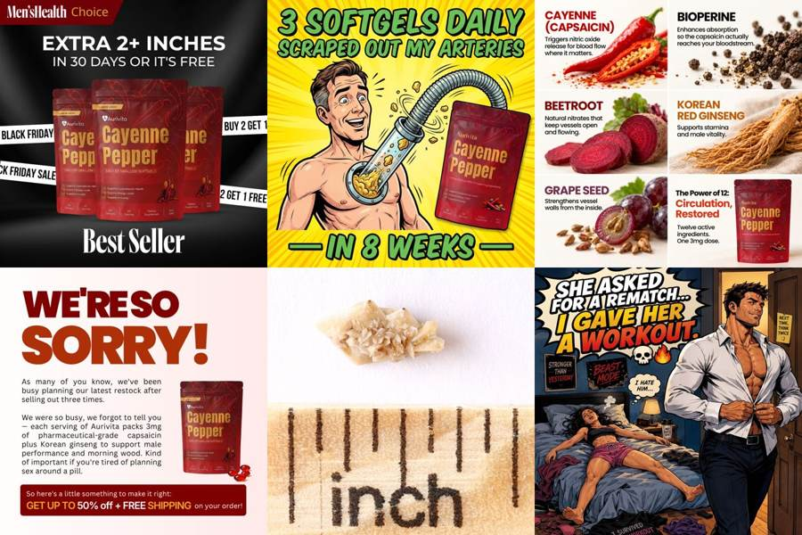
Statics. "Men's Health Choice: EXTRA 2+ INCHES or it's free" (claim we can't touch), comic-book "3 softgels scraped out my arteries", 12-ingredient grid, "WE'RE SO SORRY" apology letter, ruler + tiny crumb innuendo, comic "She asked for a rematch".
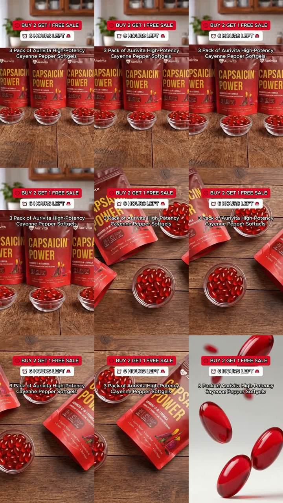
Video 1. 10-s product b-roll: BUY 2 GET 1 FREE, 6 HOURS LEFT
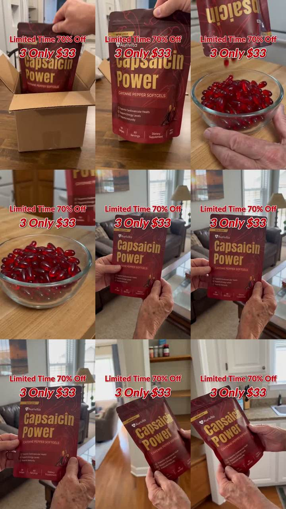
Video 2. Grandma-hands unboxing: "Limited time 70% off, 3 only $33"
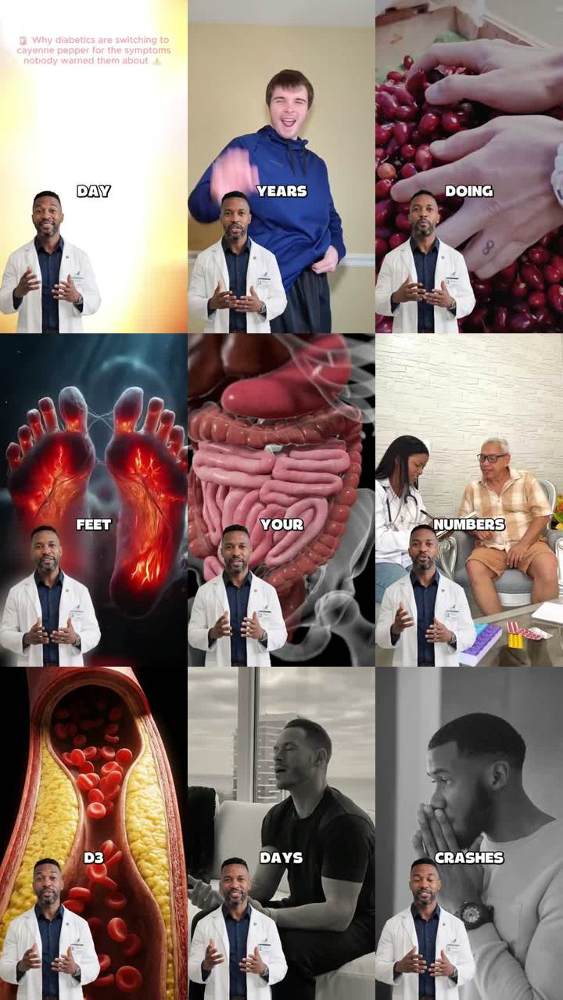
Video 3. AI doctor presenter-in-corner over b-roll (feet, gut, artery), one-word captions. White coat, which we can't use
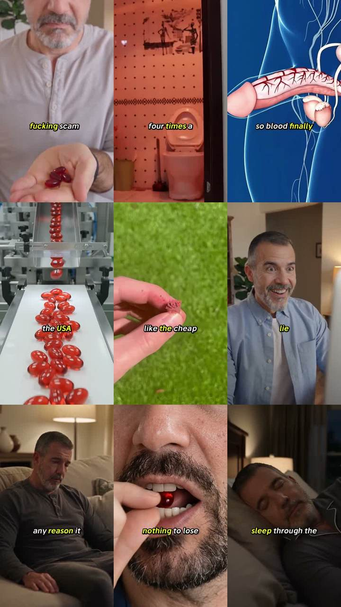
Video 4. Cinematic man story, yellow-highlighted words: "f*cking scam… four times a night… so blood finally"
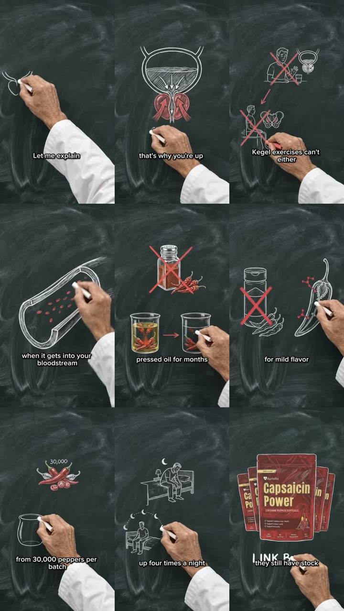
Video 5. Chalkboard hand-drawn explainer (white sleeve), ends on the pouch "they still have stock"
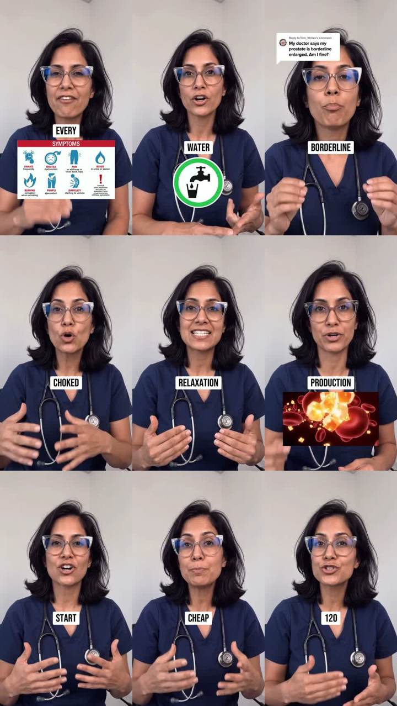
Video 6. AI nurse in navy scrubs answering a comment: "My doctor says my prostate is borderline enlarged. Am I fine?"
Auniva auniva.co · 8 pages, letters at 20-34 copies each after 11 days
"I'm a urologist and I'm sick of men saying L-arginine fixes ED." Pomegranate for the 1mm vessels. The format David wants to crack.
Top 5 ads by copies
34 copies · 1 pg · 11 d · image I have sat in the choir loft of First Baptist Tuscaloosa for 38 years and the Sunday after Easter is the first time I ever watched my husband sit in the back row. He didn't tell me he was going to do it. I was tying my robe at t…
31 copies · 1 pg · 11 d · image I hid my hands under the fellowship hall table and told Pastor Ken I couldn't do it. The lie sat between us like a plate of cold coffee. I've been sewing since I was 7 years old. My mother taught me on a Singer she got from her …
27 copies · 2 pg · 14 d · video I'm so f****ing sick of guys posting here saying L-arginine, beetroot, and maca fix ED. They don't. Not really. I've tried all of them. So have the guys in my Facebook group. So has my brother in law. So has the guy at the vitam…
27 copies · 1 pg · 11 d · image I found my husband sitting on the edge of the bed at 4:12 in the morning rubbing his feet. He did not know I was awake. The bedroom light was off. There was just the blue glow from the alarm clock on the nightstand and the sound …
25 copies · 1 pg · 11 d · image I've been going to deer camp the second week of November since 1986. That's 38 years. Same cabin. Same road out of Rhinelander. Same coffee pot on the same propane stove. Same four guys, minus the ones we've lost and plus the ones…
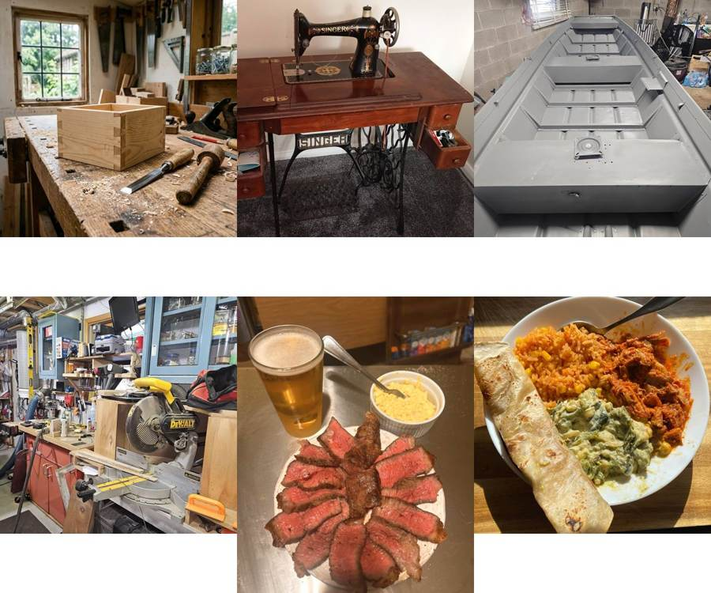
Statics. Mundane photos, no product, no text: a workbench, a Singer sewing machine, a bass boat, a garage, a plate of steak, a plate of food. Each sits under a 1,500-word first-person letter in the primary text (church choir, deer camp, "my husband slept in his recliner 41 nights").
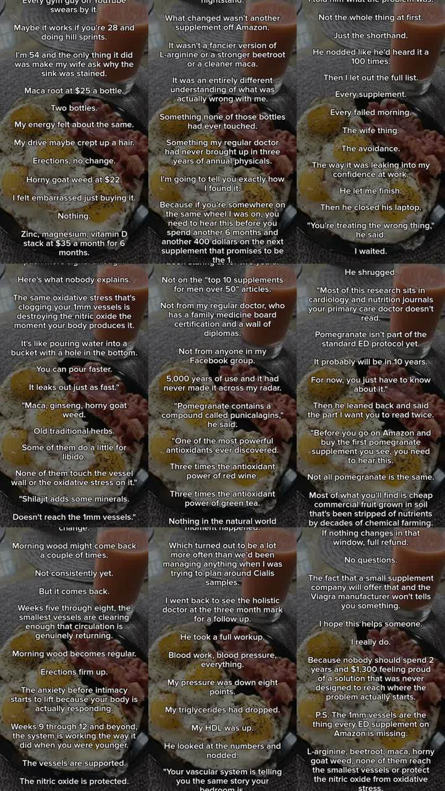
Video 1. Text-scroll video: the whole 1,500-word letter scrolling over a still of eggs and bacon. ~3 min, no voice
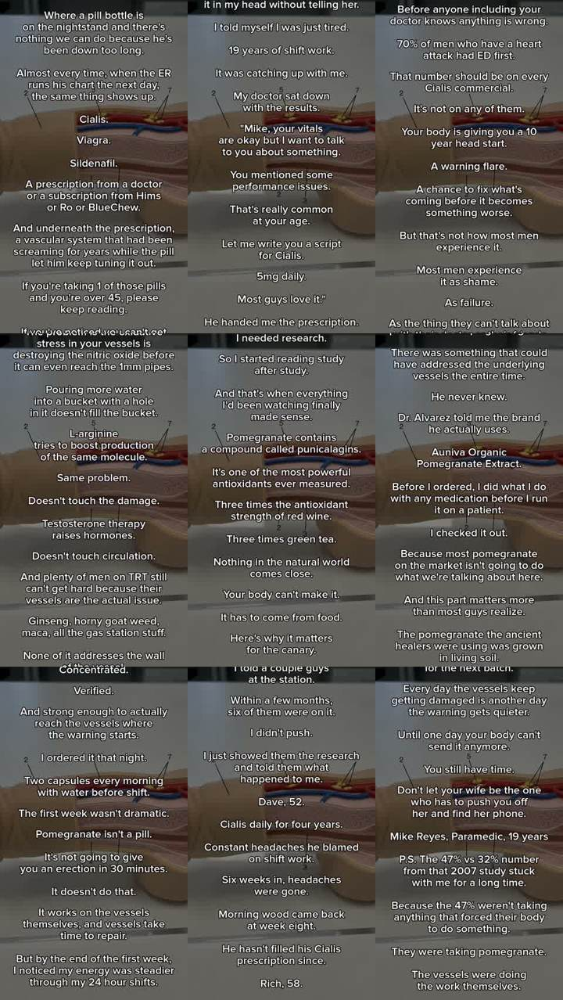
Video 2. Text-scroll over an anatomy diagram: paramedic "70% of men who had a heart attack had ED first"
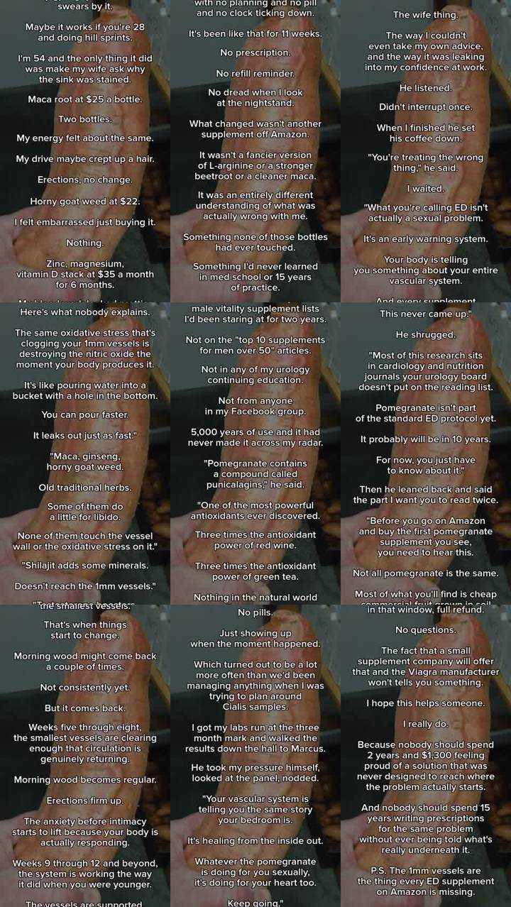
Video 3. Text-scroll over sausage: urologist version of the same letterVideo 4. Cartoon heart in an ICU bed: "3 warning signs before heart failure"
UltimaPeak ultimapeak.com · 864 ads in sweep, 18 pages
Soft + fast + no drive = "a supply problem, and supply is restorable." She notices. "My sister told me her husband was hard again in two weeks."
Top 5 ads by copies
82 copies · 10 pg · 34 d · video Most men over 35 aren't running on the same fuel they were at 25. ⚡ UltimaPeak is a daily gummy built around six clinically-studied botanicals: 🌿 L-citrulline 🌿 Panax ginseng 🌿 Ashwagandha 🌿 Saffron 🌿 Shilajit 🌿 Black Maca Form…
48 copies · 1 pg · 5 d · video My sister told me her husband was hard again in two weeks. I ordered it that same day. 🤫 I'd been telling myself it was normal. He's tired. We're older. That's just how it goes after a while. It wasn't. After 35, a man's body ma…
26 copies · 1 pg · 3 d · image Don’t take these gummies unless you want to destroy soft erections forever. Unless you want: ✅ Morning wood so hard it hurts ✅ Performance that lasts until she taps out ✅ Her to stop complaining and start asking what changed ✅ To…
22 copies · 2 pg · 3 d · image Here’s what she’s not saying out loud: When you can’t stay hard, finish in minutes, and morning wood has been gone for years, she notices. And eventually, so do you. It’s usually poor blood flow + declining vitality - not just ag…
20 copies · 2 pg · 3 d · image She notices when performance drops. Softer erections, finishing too fast, and lower drive don’t stay hidden. Eventually she feels it — and the gap gets wider the longer you wait. It’s usually poor blood flow + declining vitality,…
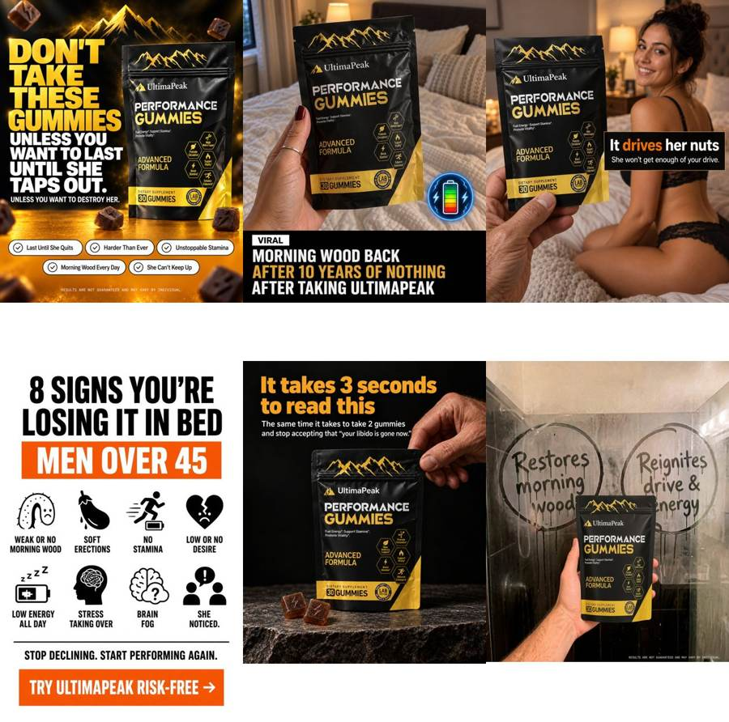
Statics. "DON'T TAKE THESE GUMMIES unless you want to last until she taps out" + 5 checkmarks, "VIRAL: morning wood back after 10 years", "It drives her nuts", "8 SIGNS YOU'RE LOSING IT IN BED, men over 45" icon grid, "It takes 3 seconds to read this", writing on steamed shower glass.
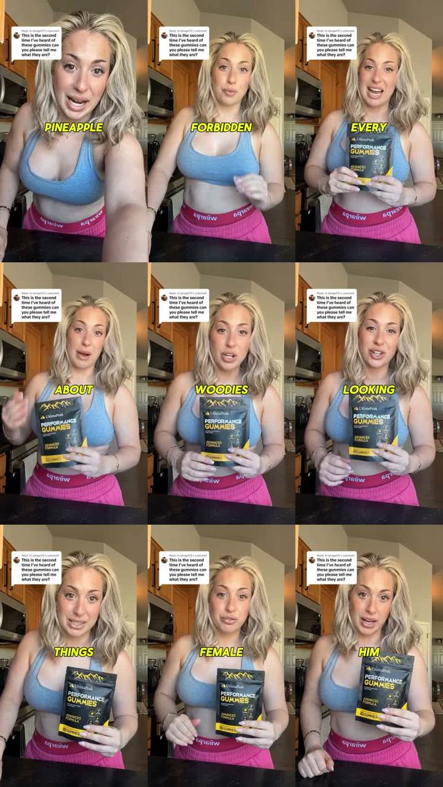
Video 1. Woman in sports bra answers a comment holding the pouch, one word at a time in yellow
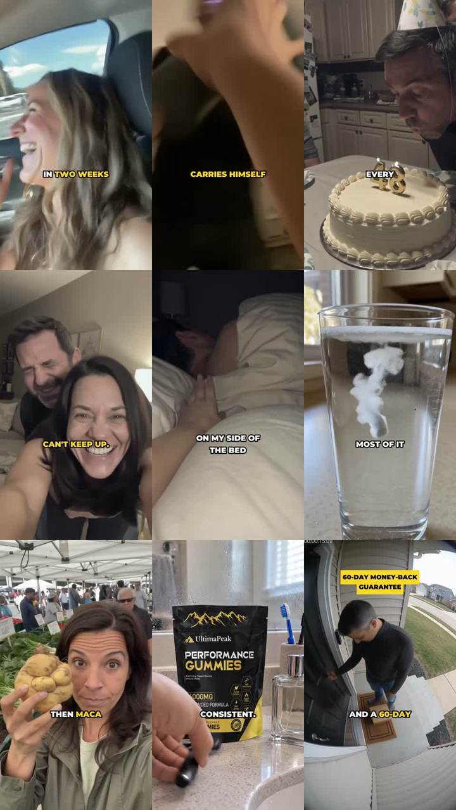
Video 2. Couple selfie montage: "in two weeks… can't keep up… 60-day money-back guarantee"
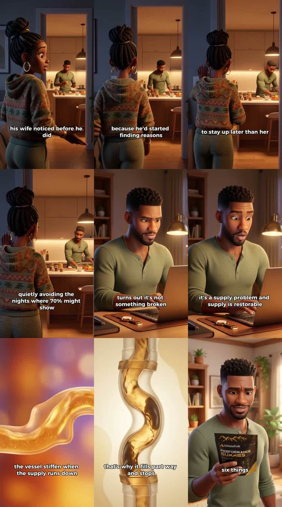
Video 3. Pixar story: "his wife noticed before he did… quietly avoiding the nights where 70% might show… supply problem" (reference cut for the narrated story)Video 4. Brunette in bedroom confession: "I got three on Sunday… I saw God. Twice."
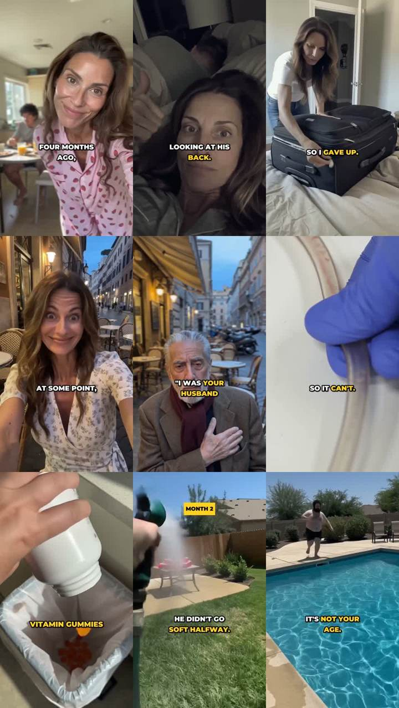
Video 5. Wife story montage: four months ago… vitamin gummies in the trash… month 2… pool
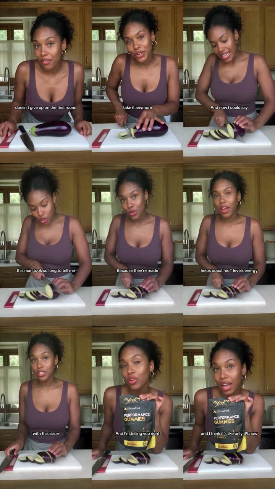
Video 6. Woman slicing an eggplant in the kitchen while she talks (produce innuendo)
Primal Storm primal-storm.com · #1 ad 125 copies × 6 pages × 159 days
"Diabetes didn't just attack your blood sugar. It attacked your erections." Fake jar at Walmart. Pharmacist who refused to fill his own Viagra script.
Top 5 ads by copies
125 copies · 6 pg · 159 d · video Low testosterone isn't age. It's modern life. Primal Storm reverses it with clinical doses of Tongkat Ali, Fadogia, and Ginseng. 10 days: drive returns 4 weeks: 93% saw T-levels up 10% Triple tested. Transparent dosing. 60-day …
40 copies · 6 pg · 17 d · video Diabetes didn't just attack your blood sugar. It attacked your erections. Here's what nobody tells diabetic men: High blood sugar slowly destroys the nerves and blood vessels that control erections. Not gradually. Not eventually…
15 copies · 1 pg · 7 d · image Please don't buy it at Walmart. I did. $19.99. A black jar with a Spartan helmet on the front and the same name as the real one. It cost me six weeks, a Facebook post I can't take back, and very nearly my marriage. Hundreds of…
15 copies · 1 pg · 5 d · image I'm a pharmacist, and I've filled Viagra for diabetic men for 28 years. In June my own prescription came through at my counter, and I refused to fill it. I want to tell you why. There's a sentence I'm not allowed to say across th…
11 copies · 2 pg · 13 d · video Low testosterone isn't just age. It's modern life and after 50, it hits hardest. The mornings feel different. The drive isn't there. Bedroom performance isn't what it was. Most men assume it's permanent. It's not. Take our free …
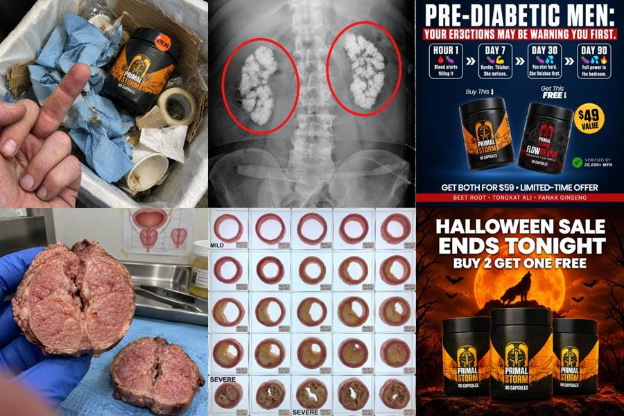
Statics. Middle finger over the fake $19.99 jar in the trash, kidney-stone X-ray, "PRE-DIABETIC MEN: your er3ctions may be warning you first" timeline + bundle $59, prostate pathology photo, artery slices mild → severe, man in the Arctic (novel-style).
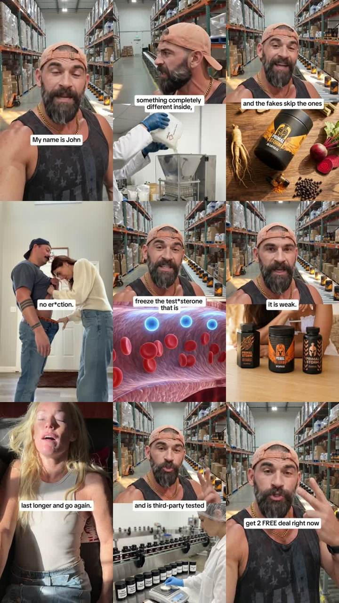
Video 1. Owner "John" in the warehouse, factory b-roll, live couple skit cut-ins, "get 2 FREE deal"
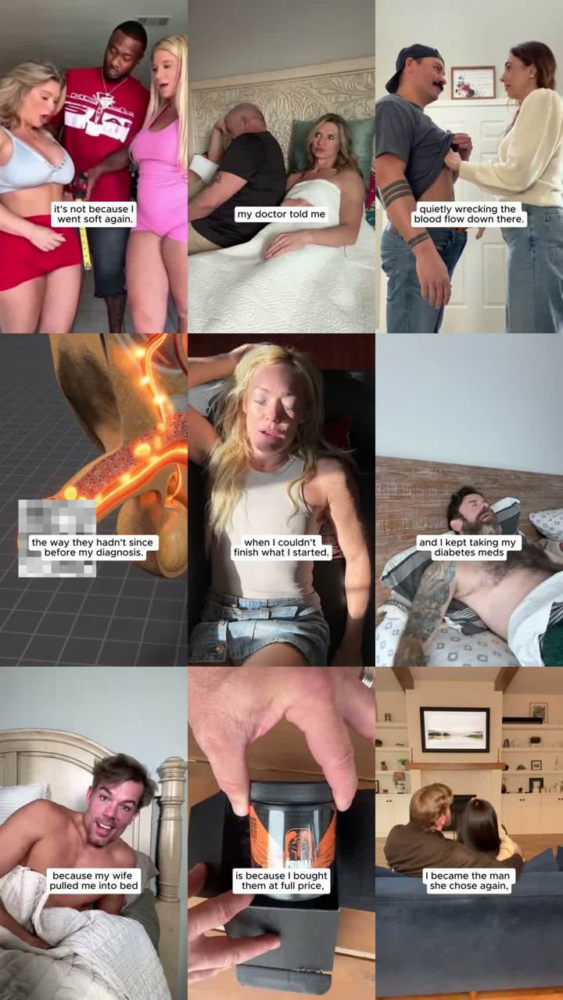
Video 2. Live couple skits + diabetes bedroom story: "I became the man she chose again"
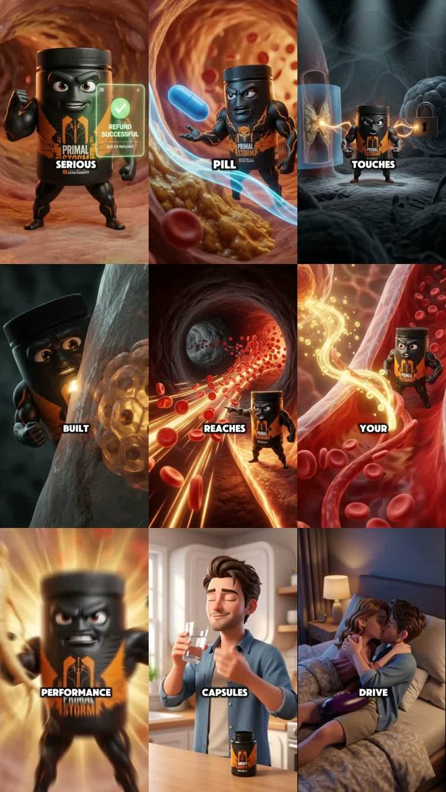
Video 3. Product-jar superhero animation, one-word captions, ends in a Pixar bedroomVideo 4. Pixar diabetic couple: "diabetes for 9 years… blue pill… I'm diabetic too… taking 5 herbs" (reference cut)
Primal Viking primalviking.com · 1,050 ads in sweep, 7 pages
"Erection size = blood volume, a nutrient deficiency doctors never test." Man boobs, cortisol, "your biology doesn't care how hard you train."
Top 5 ads by copies
77 copies · 1 pg · 55 d · video Most men aren't reaching their full size potential. Not because of genetics, but because of a nutrient deficiency most doctors never test for. Erection size = blood volume. The more blood that enters the tissue, the fuller it ex…
61 copies · 1 pg · 61 d · video Worried your best years are already behind you? The fear usually shows up the same way: Catching your reflection and not recognizing the shape, waking up tired, watching the drive you used to take for granted just thin out, and…
52 copies · 1 pg · 37 d · video You’re NOT Fat, You’re Inflamed from High Cortisol Many men notice the same change over time. Fat accumulates in the chest. Muscle definition fades. The upper body looks softer, even with training. This pattern is often called …
43 copies · 1 pg · 61 d · image New Study Reveals #1 TESTOSTERONE BOOSTER 🔥 for Males 30-55+ Low T is not your fault…You can do everything perfect and still have it. - The Perfect Diet - Exercise - Sleep And still your T will hit the floor after you’re 30.. …
28 copies · 2 pg · 61 d · image I struggled with MAN BOOBS for years and years. Nothing worked… I tried - Diets - Supplements - Exercise - Even a green juice But the MAN BOOBS only grew bigger and bigger. I felt sluggish, like a shadow of my former self. My co…
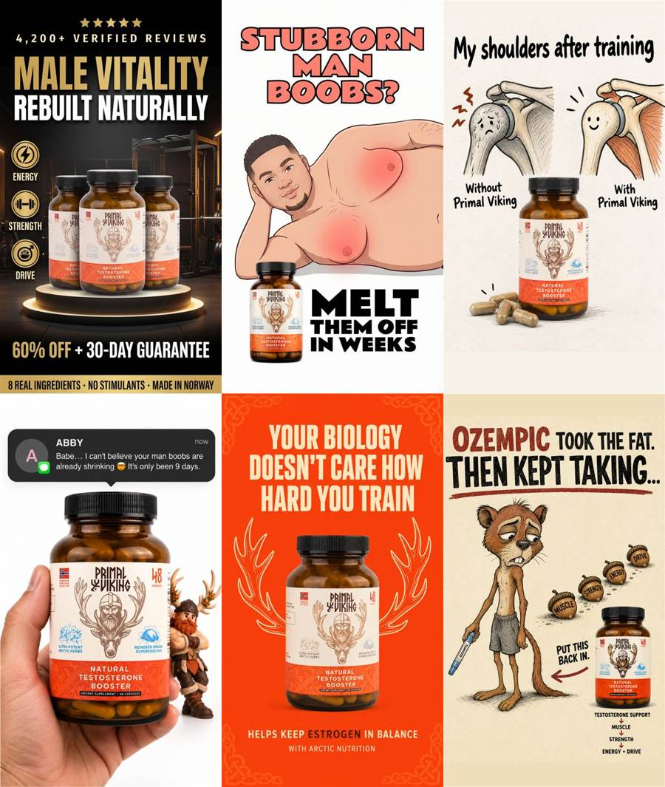
Statics. "MALE VITALITY REBUILT NATURALLY 60% off", cartoon "Stubborn man boobs? Melt them off", shoulder sketch without/with, iMessage from ABBY "your man boobs are already shrinking, 9 days", "Your biology doesn't care how hard you train", Ozempic squirrel cartoon.
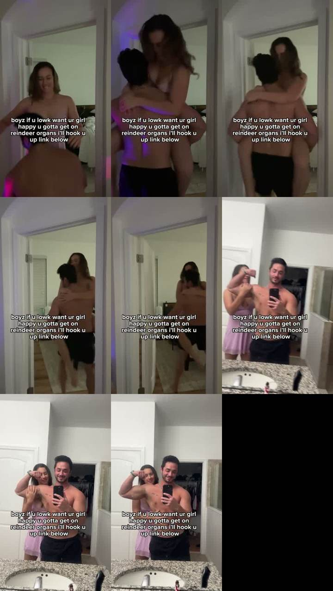
Video 1. Lo-fi couple bedroom clip: "boyz if u lowk want ur girl happy u gotta get on reindeer organs"
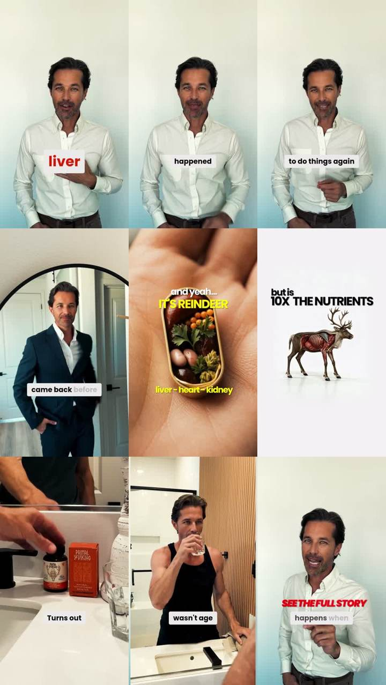
Video 2. Silver-fox presenter, reindeer capsule in palm, "it wasn't age"
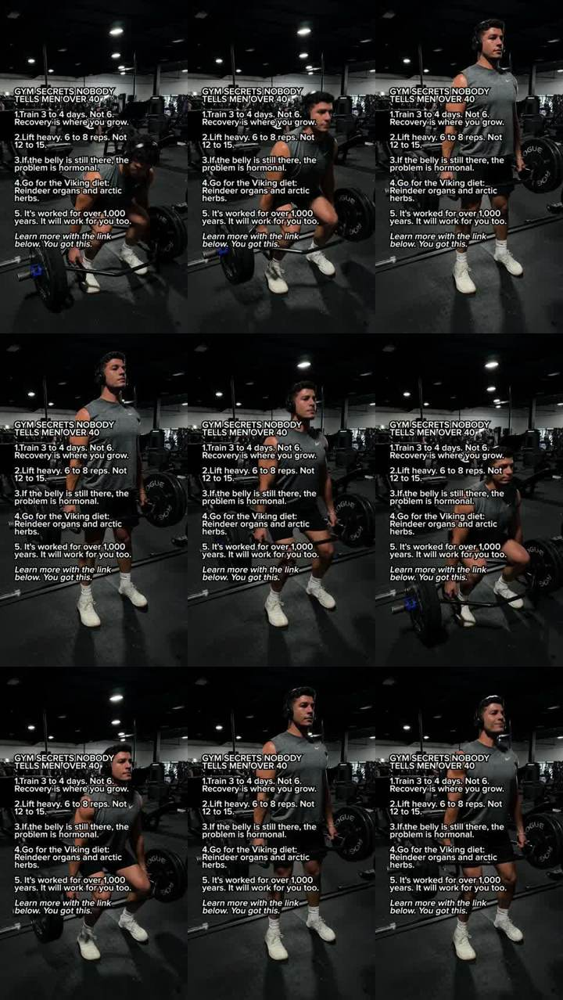
Video 3. Gym listicle: "GYM SECRETS NOBODY TELLS MEN OVER 40" text over a deadlift, no voice
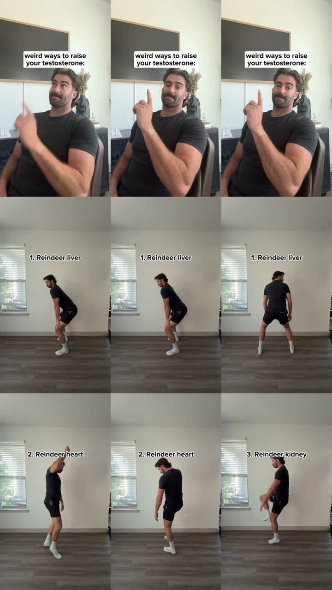
Video 4. "Weird ways to raise your testosterone" guy doing moves, numbered captionsVideo 5. AI Viking: "You don't have to quit drinking. Vikings never stopped either."
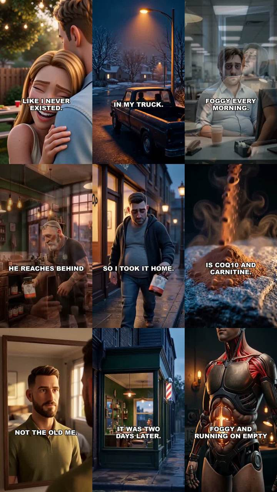
Video 6. Pixar story: "like I never existed… foggy every morning… the barber reaches behind the counter"
Heart & Soil heartandsoil.co · 1,080 ads in sweep, 2 pages, #1 at 203 copies
"Fed, not fixed." Organs your body recognizes. "THIS is who it's for: men who burned money on tongkat and felt nothing."
Top 5 ads by copies
203 copies · 1 pg · 56 d · video Whole Package delivers nature’s most powerful support for energy, vitality, and performance, sourced from grass-fed organs your body actually recognizes and uses. ✅ Third-party tested ✅ Microplastic-free packaging ✅ FSA/HSA elig…
150 copies · 1 pg · 54 d · video Some women feel like they only get two good weeks out of every month. Just as their energy returns and they begin feeling like themselves again, something changes. Cravings become harder to ignore. Bloating appears. Energy shift…
56 copies · 1 pg · 35 d · video THIS is who Whole Package is for: Men who've burned money on tongkat, ashwagandha, fadogia and whatever booster some influencer was pushing, and felt absolutely nothing. Men who've googled low T at midnight, priced out TRT and n…
48 copies · 1 pg · 56 d · video Fed, not fixed. That's why men who try Whole Package keep coming back. They feel the difference when their body gets what it actually needs. ✓ Noticeably improved drive & libido ✓ Natural support for testosterone & energy ✓ Trust…
43 copies · 2 pg · 56 d · video Men who try Whole Package keep coming back for one reason, they feel the difference. ✓ Noticeably improved drive & libido ✓ Natural support for testosterone & energy ✓ Trusted by 1000's of men Try it risk-free for 60 days →…
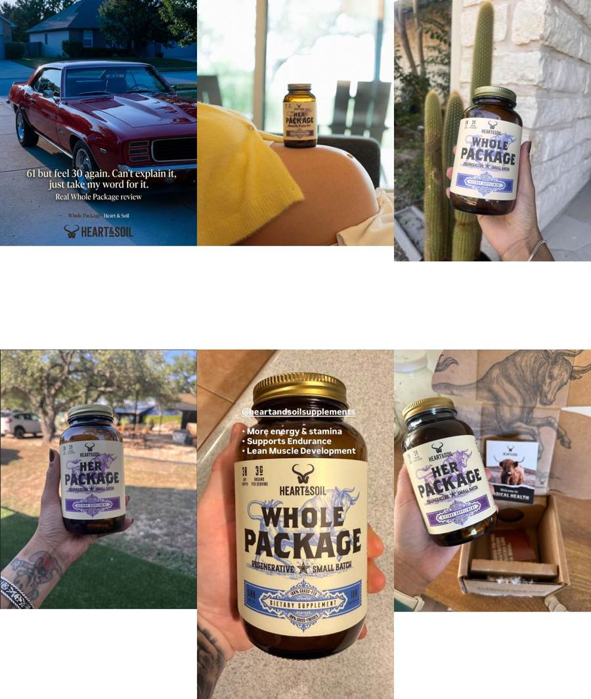
Statics. Review quote on a red Camaro "61 but feel 30 again", jar on a pregnant belly, jar-in-hand × 3, unboxing.
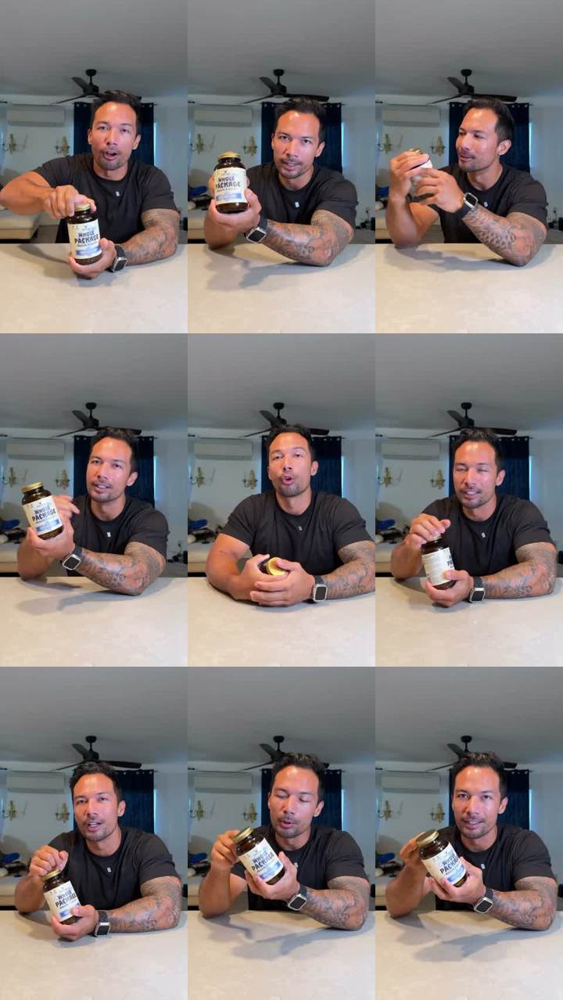
Video 1. Tattooed guy at a table, jar in hand, talking
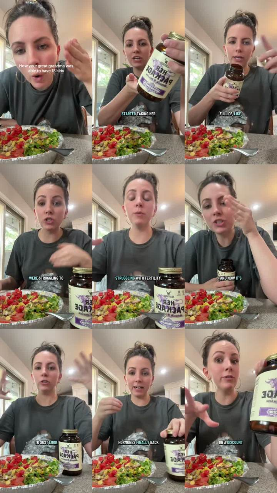
Video 2. Woman eating salad: "How your great grandma was able to have 15 kids"Video 3. Motorcycle windshield with handwritten text, nothing moves
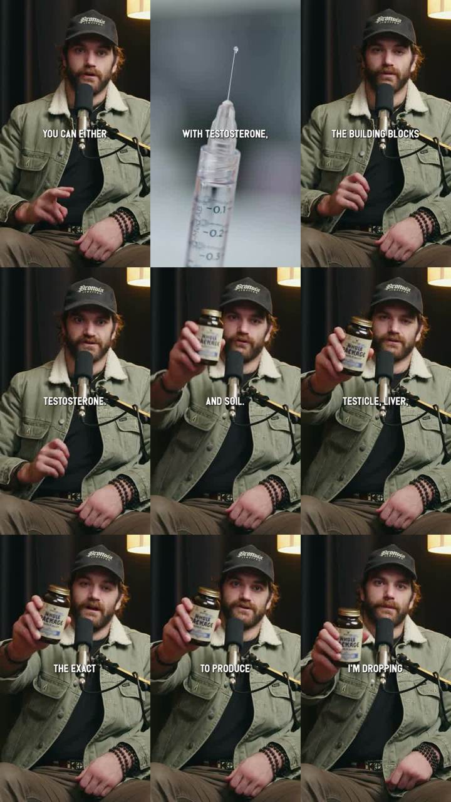
Video 4. Podcast clip with syringe b-roll: "you can either… with testosterone"
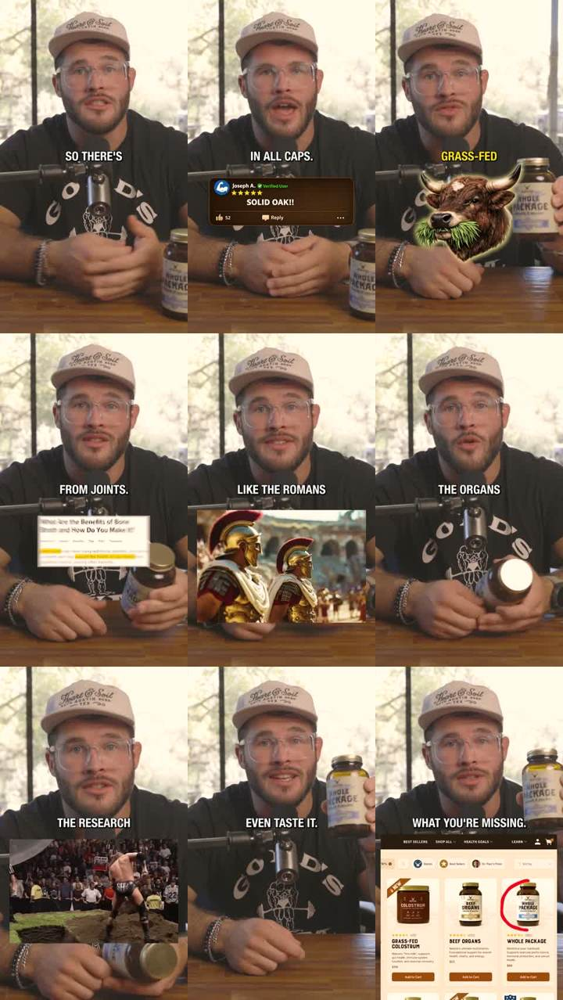
Video 5. Founder-style podcast clip with review pop-ups and site screenshot (Meta rejects podcast on our accounts)Video 6. Car selfie, colostrum
Rosabella tryrosabella.com · ~470 live, 16 pages
"This is why it's not working" (200mg vs 1,300mg). Family parables ("Call him Walt"). Coroner who opened 4,000 chests.
Top 5 ads by copies
160 copies · 4 pg · 45 d · video Want a simple way to support your heart health naturally? ❤️ Introducing Rosabella Beetroot — premium certified-organic beetroot capsules made to support everyday cardiovascular health. ✅ Supports cardiovascular health ✅ Suppo…
97 copies · 7 pg · 57 d · video Introducing Rosabella Beetroot — a premium, certified-organic capsule formula that supports healthy blood flow and everyday energy. ❤️ Supports healthy circulation and blood flow ❤️ Supports cardiovascular health ❤️ Supports h…
15 copies · 9 pg · 61 d · image Nine Words, a Gravel Lane, and a Cellar Wall of Crimson Jars. Picture a man in the passenger seat of his own truck, being driven east through the dark. Call him Walt. The night before, his wife said nine words to him. She said …
23 copies · 5 pg · 41 d · video Introducing Rosabella Beetroot — premium certified-organic beetroot capsules made to support healthy circulation and everyday heart health. ❤️ Supports cardiovascular wellness ❤️ Supports healthy blood flow and circulation ❤️ S…
24 copies · 1 pg · 5 d · image The old man next door called the police on my 16-year-old 3 times in 1 year. Then he fell on his own front steps, and when my son picked him up, the old man grabbed his shirt and said, “Don’t leave.” His name is Earl Pruitt. For …
Statics. Parable photos, no product: garden rows, a police car through the window, grass by a fence, a steaming stove, a market stall, soup bowls on a table.
Video 2. Warehouse: "BUY 2, GET 2 FREE. We pack two paid and two free."
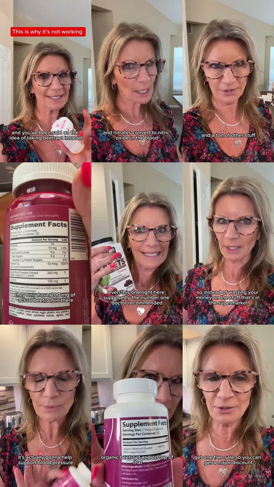
Video 3. Older woman compares two labels: "This is why it's not working… 200mg of actual beetroot"Video 4. Pixar woman: itching, kidney, menopauseVideo 5. Pixar bald character on a couch, one word at a timeVideo 6. Amish farmer in a barn: "I sell produce… buy it there"
Full write-up: research/inspo-bank/ed-supplement-steal-list-2026-10-20.md · per-brand ranks in research/inspo-bank/<brand>/ranked.md